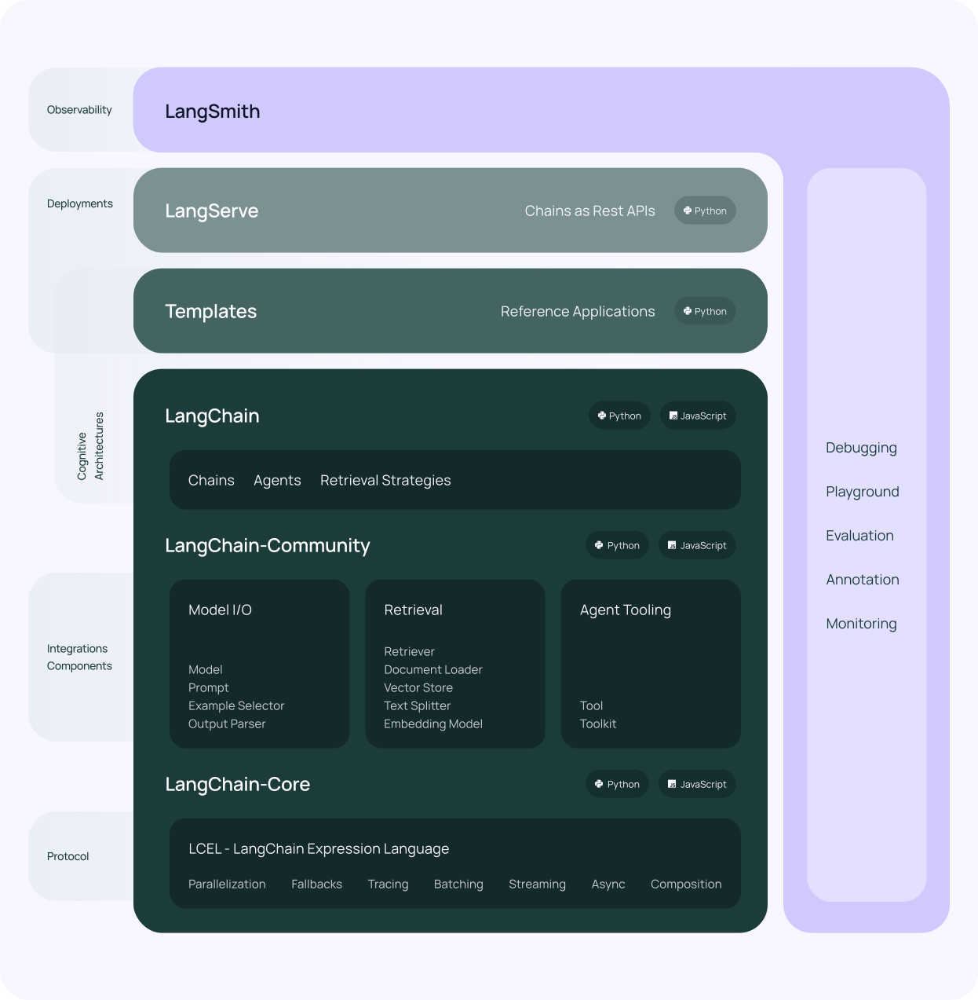

Langchain: An Introduction#
 This image is from Langchain official documentation.
Contents
What is Langchain?#
Langchain is an open-source framework designed for developers working with AI. It facilitates the integration of large language models (LLMs) like GPT-4 with external sources of computation and data. Here’s a breakdown of Langchain’s key components and functionalities:
Integration of Large Language Models (LLMs):
Langchain allows developers to seamlessly connect LLMs such as GPT-4 to external data sources and computation platforms.
This integration enables developers to leverage the vast knowledge and capabilities of LLMs in combination with their own data and applications.
Addressing Specific Information Needs:
While LLMs like GPT-4 possess extensive general knowledge, Langchain addresses the need for specific information from proprietary or domain-specific data sources.
Developers can utilize Langchain to connect LLMs to their own datasets, including documents, PDF files, or proprietary databases.
Dynamic Data Referencing:
Unlike traditional methods that involve pasting snippets of text into chat prompts, Langchain provides comprehensive ways to design prompt templates that interact with the LLMs.
Developers can segment their data into smaller chunks and store them in a vector database as embeddings, enabling efficient referencing and retrieval.
Key Components of Langchain:
LLM Wrappers: Facilitate connection to LLMs like GPT-4.
Prompt Templates: Dynamically generate prompts for LLMs based on user input.
Indexes: Extract relevant information from datasets for LLM processing.
Chains: Combine multiple components to build LLM applications following a specific task.
Agents: Enable LLMs to interact with external APIs for additional functionality.
Pipeline for Language Model Applications:
User input: Initial questions or queries from users.
Language model interaction: Sending user input to the LLM for processing.
Similarity search: Matching user queries with relevant data chunks in the vector database.
Action or response: Providing answers or taking actions based on the combined information from the LLM and vector database.
Install#
# pip install langchain
# pip install langchain-community
# pip install langchain-core
# pip install -U langchain-openai
#!pip install langchain openai weaviate-client
API Setup#
Note
Please check the official documentation – Quick Start – about how to get an OPEN AI API.
To save environment variables in a .env file and use the dotenv library in Python to load them, follow these steps:
Saving Environment Variables in a .env File:#
Create a new file in your project directory and name it
.env. This file will store your environment variables.Add your environment variables to the
.envfile in the formatVARIABLE_NAME=variable_value. For example:OPENAI_API_KEY=your_api_key DATABASE_URL=your_database_url
Using dotenv in Python to Load Environment Variables:#
Install the
dotenvlibrary if you haven’t already installed it. You can install it using pip:pip install python-dotenv
In your Python script, import the
dotenvmodule:from dotenv import load_dotenv
Load the environment variables from the
.envfile using theload_dotenv()function. Place this line at the beginning of your script:load_dotenv()
Access the environment variables in your Python script using the
os.environdictionary. For example:import os api_key = os.environ.get('API_KEY') database_url = os.environ.get('DATABASE_URL') print("API Key:", api_key) print("Database URL:", database_url)
Note
Make sure to add the
.envfile to your project’s.gitignorefile to prevent sensitive information from being exposed.You can also specify the path to the
.envfile if it’s located in a different directory:load_dotenv('/path/to/your/env/file/.env')
By following these steps, you can save environment variables in a .env file and use the dotenv library in Python to load them into your script. This approach helps keep sensitive information separate from your codebase and makes it easier to manage environment variables in your projects.
# Load environment variables
from dotenv import load_dotenv,find_dotenv
load_dotenv(find_dotenv())
load_dotenv('/Users/alvinchen/.env')
True
find_dotenv()
'/Users/alvinchen/.env'
Basic Query#
 This image is from Langchain official documentation.
This image is from Langchain official documentation.
## initialize Chat model
from langchain_openai import ChatOpenAI
chat = ChatOpenAI(model_name="gpt-4",temperature=0.3)
## Interact with the Chat model immediately
response = chat.invoke("explain large language models in one sentence")
print(response.content,end='\n')
Large language models are machine learning algorithms trained on vast amounts of text data to understand and generate human-like text.
Messages#
In LangChain, SystemMessage, HumanMessage, and AIMessage are classes used to represent different types of messages that can be exchanged during interactions with a language model. These distinctions help structure and contextualize conversations or workflows involving LLMs.
SystemMessage: This is used to provide context or instructions to the language model. These messages typically set the stage for how the model should behave or what role it should assume.
HumanMessage: It represents input or queries from a user. These messages simulate the interaction coming from a human participant in the conversation.
AIMessage: This represents the responses generated by the language model. These messages encapsulate the output provided by the AI in response to human or system messages.
# import schema for chat messages and ChatOpenAI in order to query chatmodels GPT-3.5-turbo or GPT-4
from langchain_core.messages import (
HumanMessage,
SystemMessage,
AIMessage
)
## LLM
chat = ChatOpenAI(model_name="gpt-3.5-turbo",temperature=0.3)
## Messages
messages = [
SystemMessage(content="You are an expert data scientist"),
HumanMessage(content="Write a Python script that trains a neural network on simulated data ")
]
## Response
response=chat.invoke(messages)
## Print out
print(response.content,end='\n')
Sure, here is an example Python script using the popular deep learning library TensorFlow to train a simple neural network on simulated data:
```python
import numpy as np
import tensorflow as tf
# Generate simulated data
np.random.seed(0)
X = np.random.rand(100, 2)
y = np.random.randint(0, 2, 100)
# Define the neural network architecture
model = tf.keras.models.Sequential([
tf.keras.layers.Dense(10, activation='relu', input_shape=(2,)),
tf.keras.layers.Dense(1, activation='sigmoid')
])
# Compile the model
model.compile(optimizer='adam', loss='binary_crossentropy', metrics=['accuracy'])
# Train the model
model.fit(X, y, epochs=10, batch_size=32)
# Evaluate the model
loss, accuracy = model.evaluate(X, y)
print(f'Loss: {loss}, Accuracy: {accuracy}')
```
In this script, we first generate simulated data with 2 features and binary labels. We then define a simple neural network with one hidden layer of 10 neurons and an output layer with a sigmoid activation function. We compile the model with binary crossentropy loss and train it on the simulated data for 10 epochs.
Finally, we evaluate the model on the training data and print out the loss and accuracy. You can modify this script to experiment with different neural network architectures, loss functions, optimizers, and hyperparameters.
## check `reponse` class type
print(type(response))
<class 'langchain_core.messages.ai.AIMessage'>
Prompt Template#
In LangChain, a PromptTemplate is a structured way to create and manage prompts that will be sent to a language model. It allows you to define a template with placeholders and then fill in these placeholders with actual values when generating a prompt. This approach is useful for ensuring consistency and reusability in the prompts you use for different tasks or interactions with the language model.
# Import prompt and define PromptTemplate
from langchain_core.prompts import PromptTemplate
## Create raw template
template = """
You are a college professor with an expertise in building deep learning models.
Answer the answer of {question} like I am five.
"""
## Initialize Prompt Tempalte
prompt = PromptTemplate.from_template(
template=template,
)
# Run LLM with PromptTemplate
response = chat.invoke(prompt.format(question="What is backpropogation?"))
print(response.content,end='\n')
Backpropagation is like a teacher helping a student correct their mistakes. Imagine you're doing a math problem. First, you try to solve it yourself. Then, your teacher checks your work. If you made a mistake, your teacher doesn't just tell you the answer, but shows you where you went wrong and how to correct it. You then use this feedback to fix your mistake and get the right answer.
In the world of computers and AI, backpropagation is a similar process. It's a way for the computer to learn from its mistakes. The computer makes a guess, checks if it's right or wrong, and then adjusts its guess based on the feedback. This process is repeated many times until the computer gets better at making the right guess.
Chain#
In LangChain, a Chain is a structured sequence of operations or steps that are executed in order to achieve a specific task. Chains can be thought of as workflows that combine various components, such as prompts, models, and data processing steps, to automate complex tasks or interactions with language models.
Key Points About Chains:
Sequential Steps: Chains consist of a series of steps that are executed one after another. Each step can involve different operations like generating text, processing data, or interacting with other services.
Modularity: Chains allow you to break down complex tasks into smaller, manageable components. Each step in a chain can be a reusable module, making it easier to build and maintain sophisticated workflows.
Flexibility: Chains can be customized to fit specific use cases. You can define the sequence of operations and specify the inputs and outputs for each step.
## create chain of prompt and chat
chain = prompt | chat
## interact with chain
response = chain.invoke({"question": "What is gradient descent?"})
print(response.content,end='\n')
Imagine you're playing a game where you're blindfolded and you're on top of a hill. Your goal is to reach the bottom of the hill. Now, you don't know where to go, but you can feel if you're moving up or down by taking small steps. You decide the best strategy is to always take a step in the direction where the hill is steepest downwards. This is exactly what gradient descent does. It's a method to find the lowest point in a valley, starting from a random point, by always taking a step in the steepest downhill direction. In the context of machine learning, the 'hill' is the error of the model, and 'reaching the bottom' means finding the best parameters for the model that make the error as small as possible.
from langchain_core.output_parsers import StrOutputParser
chain2 = prompt | chat | StrOutputParser()
chain2.invoke({"question": "What is gradient descent?"})
'Imagine you are trying to find the bottom of a big slide in a playground. Gradient descent is like taking small steps down the slide until you reach the bottom. It helps us find the best way to adjust our deep learning model to make it work better.'
Chaining A Series of Prompts#
# Import LLMChain and define chain with language model and prompt as arguments.
from langchain.chains import LLMChain
chain = LLMChain(llm=chat, prompt=prompt)
# Run the chain only specifying the input variable.
print(chain.invoke({"question": "what is derivative?"}))
{'question': 'what is derivative?', 'text': "A derivative is like a speedometer in a car. When you're driving, the speedometer tells you how fast you're going at any given moment. Similarly, in math, a derivative tells you how fast something is changing at any given point. For example, if you're looking at a graph of a hill, the derivative would tell you how steep the hill is at any point."}
# Define a second prompt
second_prompt = PromptTemplate(
input_variables=["prev_ans"],
template="Translate the answer description of {prev_ans} in traditional Chinese",
)
## Chain
chain_two = LLMChain(llm=chat,
prompt=second_prompt)
# Define a sequential chain using the two chains above: the second chain takes the output of the first chain as input
from langchain.chains import SimpleSequentialChain
overall_chain = SimpleSequentialChain(chains=[chain, chain_two], verbose=True)
# Run the chain specifying only the input variable for the first chain.
explanation = overall_chain.invoke({"input":"what is derivative?"})
print(explanation)
> Entering new SimpleSequentialChain chain...
A derivative is like a speedometer in a car. It tells you how fast you're going and in what direction. If you're driving straight, the derivative is just your speed. But if you're going up a hill or down a hill, the derivative also tells you how steep the hill is. So, in a way, it's like a super speedometer that tells you more than just your speed, but also how your speed is changing.
導數就像汽車上的速度計。它告訴你你正在以多快的速度前進以及前進的方向。如果你正在直行，導數就是你的速度。但如果你正在上坡或下坡，導數還會告訴你山坡有多陡。所以，從某種程度上說，它就像一個超級速度計，不僅告訴你你的速度，還告訴你你的速度是如何變化的。
> Finished chain.
{'input': 'what is derivative?', 'output': '導數就像汽車上的速度計。它告訴你你正在以多快的速度前進以及前進的方向。如果你正在直行，導數就是你的速度。但如果你正在上坡或下坡，導數還會告訴你山坡有多陡。所以，從某種程度上說，它就像一個超級速度計，不僅告訴你你的速度，還告訴你你的速度是如何變化的。'}
print(explanation['output'])
導數就像汽車上的速度計。它告訴你你正在以多快的速度前進以及前進的方向。如果你正在直行，導數就是你的速度。但如果你正在上坡或下坡，導數還會告訴你山坡有多陡。所以，從某種程度上說，它就像一個超級速度計，不僅告訴你你的速度，還告訴你你的速度是如何變化的。
Text Splitting#
# Import utility for splitting up texts and split up the explanation given above into document chunks
from langchain.text_splitter import RecursiveCharacterTextSplitter
text_splitter = RecursiveCharacterTextSplitter(
chunk_size = 50,
chunk_overlap = 20,
)
texts = text_splitter.create_documents([explanation['output']])
# Individual text chunks can be accessed with "page_content"
print(texts[0].page_content)
print(texts[1].page_content)
print(texts[2].page_content)
導數就像汽車上的速度計。它告訴你你正在以多快的速度前進以及前進的方向。如果你正在直行，導數就是你的速
進的方向。如果你正在直行，導數就是你的速度。但如果你正在上坡或下坡，導數還會告訴你山坡有多陡。所以，
或下坡，導數還會告訴你山坡有多陡。所以，從某種程度上說，它就像一個超級速度計，不僅告訴你你的速度，還
Retrieval-Augmented Generation#
 This image is from Langchain official documentation.
This image is from Langchain official documentation.
Retrieval-Augmented Generation (RAG) is a technique that combines information retrieval with text generation to enhance the capabilities of language models, especially for tasks requiring up-to-date or domain-specific knowledge.
Retrieval: The system first retrieves relevant documents or information from a large database or corpus based on a user’s query or input. To gather contextually relevant data that the generation model can use to produce more accurate and informed responses.
Augmentation: The retrieved information is then used to augment the input to the generation model. This ensures that the model has access to external knowledge, which can be particularly useful for questions that require specific or factual information not present in the model’s training data.
Generation: The language model generates a response or output based on the augmented input, which includes the original query and the retrieved documents. The result is a more accurate, contextually relevant, and informative response.
The goal of RAG is to enable LLMs to generate more accurate and contextual responses while minimizing factual inaccuracies, known as hallucinations, especially when prompted with queries that require knowledge beyond their pre-trained data.
Unlike traditional fine-tuning methods, which are computationally expensive and less adaptable to evolving information, RAG combines a generative model with a retriever module.
This approach allows the model to access non-parametric knowledge stored in an external knowledge source, such as a vector database, which can be updated more easily.
In essence, RAG operates similarly to an open-book exam for humans, where reference materials can be used to supplement reasoning skills.
# ## Load documents from PDF
# from langchain_community.document_loaders import PyPDFLoader
# loader = PyPDFLoader("../../../../ENC2045_demo_data/ENC2045Syllabus.pdf")
# pages = loader.load()
# pages
## We can load webpages as context documents
import bs4
from langchain_community.document_loaders import WebBaseLoader
loader = WebBaseLoader("https://alvinntnu.github.io/NTNU_ENC2045_LECTURES/intro.html")
pages = loader.load()
pages
[Document(page_content='\n\n\n\n\n\nENC2045 Computational Linguistics — ENC2045 Computational Linguistics\n\n\n\n\n\n\n\n\n\n\n\n\n\n\n\n\n\n\n\n\n\n\n\n\n\n\n\n\n\n\n\n\n\n\n\n\n\n\n\n\n\n\n\n\nSkip to main content\n\n\n\n\n\n\n\n\n\n\nCtrl+K\n\n\n\n\n\n\n\n\n\n\n\n\n\n\n\n\n\nINTRODUCTION\n\nNatural Language Processing: A Primer\nNLP Pipeline\n\nPreprocessing\n\nText Preprocessing\nText Normalization\nText Tokenization\nText Enrichment\nChinese Word Segmentation\nGoogle Colab\n\n\n\nText Vectorization\n\nText Vectorization Using Traditional Methods\n\nMachine Learning Basics\n\nMachine Learning: Overview\nMachine Learning: A Simple Example\nClassification Models\n\nMachine-Learning NLP\n\nCommon NLP Tasks\nSentiment Analysis Using Bag-of-Words\nEmsemble Learning\nTopic Modeling: A Naive Example\n\nDeep Learning NLP\n\nNeural Network From Scratch\nDeep Learning: A Simple Example\nDeep Learning: Sentiment Analysis\n\nNeural Language Model and Embeddings\n\nSequence Models Intuition\nNeural Language Model: A Start\nWord Embeddings\n\nSequence Models, Attention, Transformers\n\nAttention and Transformers: Intuitions\nSequence Model with Attention for Addition Learning\n\nLLM\n\nLarge Language Model (Under Construction…)\n\nExercises\n\n1. Assignment I: Python Basics\n2. Assignment II: Preprocessing\n3. Assignment III: Chinese Language Processing\n4. Assignment IV: Text Vectorization\n5. Assignment V: Machine Learning\n6. Assignment VI: Topic Modeling\n7. Assignment VII: Deep Learning\n8. Assignment VIII: Sentiment Analysis Using Deep Learning\n9. Assignment IV: Neural Language Model\n\nExams\n\nMidterm Exam\n\n\n\n\n\n\n\n\n\n\n\n\n\n\n\n\n\n\n\n\n\n\n\n\n\n\n\n\n\n\n\nColab\n\n\n\n\n\n\n\n\n\n\n\n\n\n.ipynb\n\n\n\n\n\n\n\n.pdf\n\n\n\n\n\n\n\n\n\n\n\n\n\n\n\n\n\n\n\nENC2045 Computational Linguistics\n\n\n\n\n Contents \n\n\n\nCourse Syllabus\nIntroduction\nCourse Objectives\nCourse Website\n\n\nReadings\nMajor Readings\nRecommended Books\nOnline Resources\nYouTube Channels \n\n\nPython Setup\nNotebooks\nConda Environment\nModule Requirements\n\n\nCoding Assignments Reminders\nAnnotated Bibliography\nGoogle Colab\nOther Logistics\nDisclaimer\nReferences\n\n\n\n\n\n\n\n\nENC2045 Computational Linguistics#\n\n\nLast Updated: 2024-02-23\n\n\n\n\n\nAttention\nWe’re updating the course materials as we progress through the Spring 2024 schedule. Typically, the lecture notes for each topic will be finalized and revised during its scheduled week on the syllabus.\n\n\nContributing to the Lecture Notes!\nThis website now supports Hypothe.is, which is an amazing tool for website annotations. If you would like to contribute to the lecture notes (e.g., error corrections), please leave your comments and suggestions as annotations. Corrections of the materials will be made on a regular basis. And your contributions are always greatly appreciated:)\n\n\nContents\n\nENC2045 Computational Linguistics\n\nCourse Syllabus\n\nIntroduction\nCourse Objectives\nCourse Website\n\n\nReadings\n\nMajor Readings\nRecommended Books\nOnline Resources\nYouTube Channels \n\n\nPython Setup\n\nNotebooks\nConda Environment\nModule Requirements\n\n\nCoding Assignments Reminders\nAnnotated Bibliography\nGoogle Colab\nOther Logistics\nDisclaimer\nReferences\n\n\n\n\n\nCourse Syllabus#\n\nIntroduction#\nComputational Linguistics (CL) is now a very active sub-discipline in applied linguistics. Its main focus is on the computational text analytics, which is essentially about leveraging computational tools, techniques, and algorithms to process and understand natural language data (in spoken, textual, or even multimodal formats). Therefore, this course aims to introduce fundamental concepts, useful strategies and common workflows that have been widely adopted by data scientists to extract useful insights from natural language data. In this course, we will mainly focus on textual data.\n\n\nCourse Objectives#\nA selective collection of potential topics may include:\n\n\n\n\n\n\n A Pipeline for Natural Language Processing\n\nText Normalization\nText Tokenization\nParsing and Chunking\n\n\n\n\n\n\n\n\n Chinese Processing\n\nIssues for Chinese Language Processing (Word Segmentation)\nDifferent word segmentation tools/packages\n\n\n\n\n\n\n\n\n Machine Learning Basics\n\nFeature Engineering and Text Vectorization\nTraditional Machine Learning\nClassification Models (Naive Bayes, SVM, Logistic Regression)\n\n\n\n\n\n\n\n\n Common Computational Tasks\n\nSentiment Analysis\nTex Clustering and Topic Modeling\nEmsemble Learning\n\n\n\n\n\n\n\n\n Deep Learning NLP\n\nNeural Language Model\nSequence Models (RNN, LSTM, GRU)\nSequence-to-sequence Model\nAttention-based Models\nExplainable Artificial Intelligence and Computational Linguistics\n\n\n\n\n\n\n\n\n Large Language Models\n\nGenerative AI\nApplications of LLM (e.g., BERT, ChatGPT)\nTransfer Learning and Fine-Tuning\nPrompt Engineering\nRetrieval-Augmentated Generation\nMultimodal Data Processing\n\n\n\n\n\n\nThis course is extremely hands-on and will guide the students through classic examples of many task-oriented implementations via in-class theme-based tutorial sessions. The main coding language used in this course is Python.\nIt is assumed that you know or will quickly learn how to code in Python . In fact, this course assumes that every enrolled student has considerable working knowledge of Python. (If you are not sure whether you fulfill the prerequisite, please contact the instructor first).\nTo be more specific, you are assumed to have already had working knowledge of all the concepts included in the book, Lean Python: Learn Just Enough Python to Build Useful Tools. If the materials covered in the book are all very novel to you, I would strongly advise you not to take this course.\nOn the other hand, please note that this course is designed specifically for linguistics majors in humanities. For computer science majors, this course will not feature a thorough description of the mathematical operations behind the algorithms. Nor will we focus on the most recent developments in the field of deep learning based NLP. We focus more on the fundamentals and their practical implementations.\n\n\nCourse Website#\nAll the course materials will be available on the course website ENC2045. You may need a password to access the course materials/data. If you are an officially enrolled student, please ask the instructor for the passcode.\nWe will also have a Moodle course site for assignment submission.\nPlease read the FAQ of the course website before course registration.\n\n\n\nReadings#\n\nMajor Readings#\nThe course materials are mainly based on the following readings.\n\n\n\n\n\n\n\n\n\n\n\n\n\n\n\n\n\n\n\n\n\n\n\n\n\n\n\n\n\n\n\n\n\n\n\n\n\n\n\n\n\n\n\n\n\nRecommended Books#\nAlso, there are many other useful reference books, which are listed as follows in terms of three categories:\n\nPython Basics [Gerrard, 2016]\nData Analysis with Python [McKinney, 2012, Géron, 2023]\nNatural Language Processing with Python [Sarkar, 2019, Bird et al., 2009, Vajjala et al., 2020, Perkins, 2014, Srinivasa-Desikan, 2018]\nDeep Learning [Francois, 2017]\nThe Oxford Handbook of Computational Linguistics (Second edition) [Mitkov, 2022]\n\n\n\nOnline Resources#\nIn addition to books, there are many wonderful on-line resources, esp.\xa0professional blogs, providing useful tutorials and intuitive understanding of many complex ideas in NLP and AI development. Among them, here is a list of my favorites:\n\nToward Data Science\nLeeMeng\nDipanzan Sarkar’s articles\nPython Graph Libraries\nKGPTalkie NLP\nJason Brownlee’s Blog: Machine Learning Mastery\nJay Alammar’s Blog\nChris McCormich’s Blog\nGLUE: General Language Understanding Evaluation Benchmark\nSuperGLUE\n\n\n\nYouTube Channels #\n\nChris McCormick AI\nCorey Schafer\nEdureka!\nDeeplearning.ai\nFree Code Camp\nGiant Neural Network\nTech with Tim\nPyData\nPython Programmer\nKeith Galli\nData Science Dojo\nCalculus: Single Variable by Professor Robert Ghrist\n\n\n\n\nPython Setup#\n\nNotebooks#\nIn this class, I will use Jupyter Notebook for code demonstrations and tutorials. It’s important for you to set up Python environments similarly.\nPlease note that many alternative IDE applications also support jupyter notebooks files. Another great option for Python developers is Visual Studio Code.\nIn this class, we will mainly use Jupyter notebook files (*.ipyrnb), including all your coding assignments. You can run these files either with the default Jupyter notebook from the terminal or with other third-party IDEs that support notebook files, such as Visual Studio Code. Additionally, running the course materials on Google Colab is recommended.\n\n\nConda Environment#\n\nAttention\nThe following installation codes are terminal codes.\n\n\nWe assume that you have created and set up your python environment as follows:\n\nInstall the python with Anaconda.\nCreate a conda environment named python-notes with python 3.9:\nconda create --name python-notes python=3.9\n\n\n\nActivate the conda environment:\nconda activate python-notes\n\n\n\nInstall Jupyter notebook in the newly created conda environment:\npip install notebook\n\n\n\nInstall ipykernel package in the newly created conda enviornment:\npip install ipykernel\n\n\n\nAdd this new conda environment to IPython kernel list:\npython -m ipykernel install --user --name=python-notes\n\n\n\nRun the notebooks provided in the course materials in this newly created conda environment:\njupyter notebook\n\n\n\n\n\nIn this course, we’ll use jupyter notebook for Python scripting, and all assignments must be submitted in this format. (Refer to the Jupyter Notebook installation documentation if needed).\nYou’re expected to have set up a Conda virtual environment named python-notes for scripting and be able to run notebooks using this environment’s kernel in Jupyter.\nAlternatively, you can run the notebooks directly in Google Colab, or download the .ipynb files to your hard drive or Google Drive for further modifications.\n\n\nTip\nIf you cannot find the conda environment kernal in your Jupyter Notebook. Please install the module ipykernel. For more details on how to use specific conda environments in Jupyter Notebook, please see this article.\n\n\nSet your parameters!!\nWhen you run the installation of the python modules and other packages in the terminal, please remember to change the arguments of the parameters when you follow the instructions provided online.\nFor example, when you create the conda environment:\nconda create --name XXX python=3.9\n\n\nYou need to specify the conda environment name XXX on your own.\nSimilarly, when you add the self-defined conda environment to the notebook kernel list:\npython -m ipykernel install --user --name=XXX\n\n\nYou need to specify the conda environment name XXX.\n\n\nInstallation tips!\nThere are several important things here:\n\nYou need to activate the conda environment (python-notes) in the terminal before installing the necessary modules.\nYou need to add the kernel name with python -m ipykernel install --user --name=XXX within the conda enviroment as well (i.e., actviate the conda environment first).\nIn summary, activate the Conda environment python-notes, install the ipykernel module, and add the python-notes kernel to the IPython kernel list.\nAfter a few trial-and-errors, I think the best environment setting is that you only add the kernel name (conda environment) to ipykernel within the python-notes conda environment. Do not add the conda environment again in your base python environment.\nMake sure to install jupyter in your Conda environment (python-notes) and run your notebook from this python-notes environment.\nRule of thumb: Activate the newly created conda environment first!!\nFor Windows users, it’s strongly advised to install python-related modules in Anaconda Prompt rather than cmd.\n\n\n\nNotes for Windows Users\nBecause some of the Window’s users are suffering from the problem that the notebook cannot find the correct path of your python-notes environment. Could you please try the following?\n\nAttention\nWe assume you run the following steps in Anaconda Powershell Prompt.\n\n\nCreate the new conda environment, python-notes (if you have done this, ignore)\n$ conda create --name python-notes python=3.9\n\n\n\nActivate the newly-created python-notes conda environment\n$ conda activate python-notes\n\n\n\nWithin the python-notes environment, install the module ipykernel\n$ conda install -c conda-forge ipykernel\n\n\n\nWithin the python-notes environment, install Jupyter notebook:\nconda install -c conda-froge notebook\n\n\n\nAdd this new conda environment to IPython kernel list:\npython -m ipykernel install --user --name=python-notes\n\n\n\nDeactivate the conda environment\n$ conda deactivate\n\n\n\nInstall the module nb_conda_kernels in your Anaconda base python (This is crucial to the use of self-defined conda environments in notebook.)\n$ conda install nb_conda_kernels\n\n\n\nThen check if the system detects your python-notes environment\n$ python -m nb_conda_kernels list\n\n\n\n\n\nNote\nIdeally, you should see your python-notes popping up in the results like:\nconda-env-python-notes-py c:\\users\\alvinchen\\anaconda3\\envs\\python-notes\\share\\jupyter\\kernels\\python3\n\n\n\n\nIf you see the new conda environment name, then it should work. Next, initiate your jupyter notebook\n$ jupyter notebook\n\n\n\nNow you should be able to see you conda environment python-notes in your notebook, but the kernel name would be something like python [conda evn: python-notes].\n\n\n\n\nModule Requirements#\nNot all modules used in this course come with the default installation of the Python environment. Please remember to install these packages in use if you get a module-not-found type of errors.\nThe following is a list of packages we will use (non-exhaustive):\n\nbeautifulsoup4\nckip-transformers\ngensim\njieba\njupyter\njupyter-nbextensions-configurator\nKeras\nmatplotlib\nnltk\nnumpy\npandas\nscikit-learn\nseaborn\nspacy\nscipy\ntensorflow\ntransformers\n\nPlease google these packages for more details on their installation.\n\n\n\nCoding Assignments Reminders#\n\nYou have to submit your assignments via Moodle.\nPlease name your files in the following format: Assignment-X-NAME.ipynb and Assignment-X-NAME.html.\nPlease always submit both the Jupyter notebook file and its HTML version.\nOn the assignment due date, students will present their solutions to the exercises, with each presentation limited to 20-30 minutes.\nThe class will be divided into small groups for these exercise/assignment presentations, with the group size determined by the final enrollment. (Each group is expected to make two presentations throughout the semester.)\n\n\nAttention\nUnless otherwise specified in class, all assignments will be due on the date/time given on Moodle. The due is usually a week after the topic is finished. Late work within 7 calendar days of the original due date will be accepted by the instructor at the instructor’s discretion. After that, no late work will be accepted.\n\n\n\nAnnotated Bibliography#\n\nFind a minimum of five articles published in the section of ArXiv in Computation and Language over the last five years and compile an annotated bibliography.\nFor each source reference in the annotated bibliography, provide a succinct summary and evaluation.\nThe annotations should offer a compact overview of the content, as well as assess the relevance and contributions of the study to a specific topic or field, along with its quality.\nEach annotation should be concise yet critical, comprising no more than 250 words for each source. Your annotations should provide a comprehensive overview of the study’s contributions, enabling readers who haven’t read the paper to grasp its significance. Remember, plagiarism is strictly prohibited.\nIt’s advisable to choose articles related to a specific topic. For inspiration on potential topics, please refer to Part 3 Language Processing Tasks and/or Part 4 NLP Applications in the Oxford Handbook of Computational Linguistics [Mitkov, 2022].\nThe deadline for the annotated bibliography will be announced after the midterm exam.\n\n\n\nGoogle Colab#\n\nThe course materials are being revised so that all the codes can be executed directly on Google Colab. Ideally, it is hoped that students do not have to go through the painful experience of installing python as their start of the NLP !\nRight now, we can check the packages available on Google Colab with the following commands:\n\n\n\n## -------------------- ##\n## Colab Only ##\n## -------------------- ##\n\n!pip list | wc\n!pip list -v\n\n\n\n\n\nTo execute the code provided in the course materials on Google Colab, you might have to install certain packages not present in the default Colab environment.\nInstalling packages or modules in Google Colab is simple and can be accomplished using the !pip command, enabling you to execute shell commands directly within a Colab notebook.\n\n\n\n## -------------------- ##\n## Colab Only ##\n## -------------------- ##\n\n! pip install requests_html\n! pip install pytesseract\n\n\n\n\n\nWe expect everyone to create a directory named ENC2045_demo_data at the root of their own Google Drive. All datasets intended for future tutorials should be downloaded and stored in this designated folder. This setup allows easy access to the datasets on Google Colab using the provided code snippet:\n\n\n\n## -------------------- ##\n## Colab Only ##\n## -------------------- ##\n\nfrom google.colab import drive\ndrive.mount(\'/content/drive\')\n\n\n\n\n\nOnce you’ve mounted Google Drive on Google Colab, the path to access the course materials will be: /content/drive/MyDrive/ENC2045_demo_data/.\n\n\n\nOther Logistics#\nPlease refer to Course Website ENC2045 for a tentative course schedule and the grading policies.\n\n\nDisclaimer#\nWhile I strive to cover the basics of computational linguistics to the best of my ability, please note that I am not an expert in Python. Therefore, there may be more advanced packages or more efficient algorithms available that can accomplish the tasks discussed in class. However, it is our intention that the fundamentals covered in this course will provide you with a solid foundation to delve into the latest advancements in the field.\n\n\nReferences#\n\n\n1\nPaul Gerrard. Lean Python: Learn Just Enough Python to Build Useful Tools. Apress, 2016.\n\n2\nWes McKinney. Python for data analysis: Data wrangling with Pandas, NumPy, and IPython. " O\'Reilly Media, Inc.", 2012.\n\n3\nAurélien Géron. Hands-on machine learning with Scikit-Learn, Keras, and TensorFlow: Concepts, tools, and techniques to build intelligent systems. Third Edition. O\'Reilly Media, 2023.\n\n4\nDipanjan Sarkar. Text analytics with Python: a practitioner\'s guide to natural language processing. Apress, 2019.\n\n5\nSteven Bird, Ewan Klein, and Edward Loper. Natural language processing with Python: analyzing text with the natural language toolkit (See https://www.nltk.org/book/). " O\'Reilly Media, Inc.", 2009.\n\n6\nSowmya Vajjala, Bodhisattwa Majumder, Anuj Gupta, and Harshit Surana. Practical Natural Language Processing: A Comprehensive Guide to Building Real-World NLP Systems. O\'Reilly Media, 2020.\n\n7\nJacob Perkins. Python 3 text processing with NLTK 3 cookbook. Packt Publishing Ltd, 2014.\n\n8\nBhargav Srinivasa-Desikan. Natural Language Processing and Computational Linguistics: A practical guide to text analysis with Python, Gensim, spaCy, and Keras. Packt Publishing Ltd, 2018.\n\n9\nChollet Francois. Deep learning with Python. Manning Publications Company, 2017.\n\n10(1,2)\nRuslan Mitkov. The Oxford handbook of computational linguistics. Second edition. Oxford University Press, 2022.\n\n\n\n\n\n\n\n\n\n\n\n\n\n\n\n\n\n\n\n\n\n\n\n\n\n\n\n\n\n\n\n\n\n\n\n\nnext\nNatural Language Processing: A Primer\n\n\n\n\n\n\n\n\n\n\n Contents\n \n\n\nCourse Syllabus\nIntroduction\nCourse Objectives\nCourse Website\n\n\nReadings\nMajor Readings\nRecommended Books\nOnline Resources\nYouTube Channels \n\n\nPython Setup\nNotebooks\nConda Environment\nModule Requirements\n\n\nCoding Assignments Reminders\nAnnotated Bibliography\nGoogle Colab\nOther Logistics\nDisclaimer\nReferences\n\n\n\n\n\n\n\n\nBy Alvin Cheng-Hsien Chen\n\n\n\n\n \n © Copyright 2023 Alvin Chen.\n \n\n\n\n\n\n\n\n\n\n\n\n\n\n\n\n\n\n', metadata={'source': 'https://alvinntnu.github.io/NTNU_ENC2045_LECTURES/intro.html', 'title': 'ENC2045 Computational Linguistics — ENC2045 Computational Linguistics', 'language': 'en'})]
from langchain_community.vectorstores import FAISS
from langchain_openai import OpenAIEmbeddings
from langchain_text_splitters import RecursiveCharacterTextSplitter
## Initialize splitter
text_splitter = RecursiveCharacterTextSplitter(chunk_size = 1000,
chunk_overlap = 50)
## Initialize embeddings
embeddings = OpenAIEmbeddings(model="text-embedding-3-large")
## Split documents
documents = text_splitter.split_documents(pages)
## Vectorize documents into vector store
vector = FAISS.from_documents(documents, ## documents
embeddings) ## embedding model
documents
[Document(page_content='ENC2045 Computational Linguistics — ENC2045 Computational Linguistics\n\n\n\n\n\n\n\n\n\n\n\n\n\n\n\n\n\n\n\n\n\n\n\n\n\n\n\n\n\n\n\n\n\n\n\n\n\n\n\n\n\n\n\n\nSkip to main content\n\n\n\n\n\n\n\n\n\n\nCtrl+K\n\n\n\n\n\n\n\n\n\n\n\n\n\n\n\n\n\nINTRODUCTION\n\nNatural Language Processing: A Primer\nNLP Pipeline\n\nPreprocessing\n\nText Preprocessing\nText Normalization\nText Tokenization\nText Enrichment\nChinese Word Segmentation\nGoogle Colab\n\n\n\nText Vectorization\n\nText Vectorization Using Traditional Methods\n\nMachine Learning Basics\n\nMachine Learning: Overview\nMachine Learning: A Simple Example\nClassification Models\n\nMachine-Learning NLP\n\nCommon NLP Tasks\nSentiment Analysis Using Bag-of-Words\nEmsemble Learning\nTopic Modeling: A Naive Example\n\nDeep Learning NLP\n\nNeural Network From Scratch\nDeep Learning: A Simple Example\nDeep Learning: Sentiment Analysis\n\nNeural Language Model and Embeddings\n\nSequence Models Intuition\nNeural Language Model: A Start\nWord Embeddings\n\nSequence Models, Attention, Transformers', metadata={'source': 'https://alvinntnu.github.io/NTNU_ENC2045_LECTURES/intro.html', 'title': 'ENC2045 Computational Linguistics — ENC2045 Computational Linguistics', 'language': 'en'}),
Document(page_content='Sequence Models, Attention, Transformers\n\nAttention and Transformers: Intuitions\nSequence Model with Attention for Addition Learning\n\nLLM\n\nLarge Language Model (Under Construction…)\n\nExercises\n\n1. Assignment I: Python Basics\n2. Assignment II: Preprocessing\n3. Assignment III: Chinese Language Processing\n4. Assignment IV: Text Vectorization\n5. Assignment V: Machine Learning\n6. Assignment VI: Topic Modeling\n7. Assignment VII: Deep Learning\n8. Assignment VIII: Sentiment Analysis Using Deep Learning\n9. Assignment IV: Neural Language Model\n\nExams\n\nMidterm Exam\n\n\n\n\n\n\n\n\n\n\n\n\n\n\n\n\n\n\n\n\n\n\n\n\n\n\n\n\n\n\n\nColab\n\n\n\n\n\n\n\n\n\n\n\n\n\n.ipynb\n\n\n\n\n\n\n\n.pdf\n\n\n\n\n\n\n\n\n\n\n\n\n\n\n\n\n\n\n\nENC2045 Computational Linguistics\n\n\n\n\n Contents \n\n\n\nCourse Syllabus\nIntroduction\nCourse Objectives\nCourse Website\n\n\nReadings\nMajor Readings\nRecommended Books\nOnline Resources\nYouTube Channels \n\n\nPython Setup\nNotebooks\nConda Environment\nModule Requirements', metadata={'source': 'https://alvinntnu.github.io/NTNU_ENC2045_LECTURES/intro.html', 'title': 'ENC2045 Computational Linguistics — ENC2045 Computational Linguistics', 'language': 'en'}),
Document(page_content='Coding Assignments Reminders\nAnnotated Bibliography\nGoogle Colab\nOther Logistics\nDisclaimer\nReferences\n\n\n\n\n\n\n\n\nENC2045 Computational Linguistics#\n\n\nLast Updated: 2024-02-23\n\n\n\n\n\nAttention\nWe’re updating the course materials as we progress through the Spring 2024 schedule. Typically, the lecture notes for each topic will be finalized and revised during its scheduled week on the syllabus.\n\n\nContributing to the Lecture Notes!\nThis website now supports Hypothe.is, which is an amazing tool for website annotations. If you would like to contribute to the lecture notes (e.g., error corrections), please leave your comments and suggestions as annotations. Corrections of the materials will be made on a regular basis. And your contributions are always greatly appreciated:)\n\n\nContents\n\nENC2045 Computational Linguistics\n\nCourse Syllabus\n\nIntroduction\nCourse Objectives\nCourse Website\n\n\nReadings\n\nMajor Readings\nRecommended Books\nOnline Resources\nYouTube Channels \n\n\nPython Setup', metadata={'source': 'https://alvinntnu.github.io/NTNU_ENC2045_LECTURES/intro.html', 'title': 'ENC2045 Computational Linguistics — ENC2045 Computational Linguistics', 'language': 'en'}),
Document(page_content='Python Setup\n\nNotebooks\nConda Environment\nModule Requirements\n\n\nCoding Assignments Reminders\nAnnotated Bibliography\nGoogle Colab\nOther Logistics\nDisclaimer\nReferences\n\n\n\n\n\nCourse Syllabus#\n\nIntroduction#\nComputational Linguistics (CL) is now a very active sub-discipline in applied linguistics. Its main focus is on the computational text analytics, which is essentially about leveraging computational tools, techniques, and algorithms to process and understand natural language data (in spoken, textual, or even multimodal formats). Therefore, this course aims to introduce fundamental concepts, useful strategies and common workflows that have been widely adopted by data scientists to extract useful insights from natural language data. In this course, we will mainly focus on textual data.\n\n\nCourse Objectives#\nA selective collection of potential topics may include:\n\n\n\n\n\n\n A Pipeline for Natural Language Processing\n\nText Normalization\nText Tokenization\nParsing and Chunking', metadata={'source': 'https://alvinntnu.github.io/NTNU_ENC2045_LECTURES/intro.html', 'title': 'ENC2045 Computational Linguistics — ENC2045 Computational Linguistics', 'language': 'en'}),
Document(page_content='Chinese Processing\n\nIssues for Chinese Language Processing (Word Segmentation)\nDifferent word segmentation tools/packages\n\n\n\n\n\n\n\n\n Machine Learning Basics\n\nFeature Engineering and Text Vectorization\nTraditional Machine Learning\nClassification Models (Naive Bayes, SVM, Logistic Regression)\n\n\n\n\n\n\n\n\n Common Computational Tasks\n\nSentiment Analysis\nTex Clustering and Topic Modeling\nEmsemble Learning\n\n\n\n\n\n\n\n\n Deep Learning NLP\n\nNeural Language Model\nSequence Models (RNN, LSTM, GRU)\nSequence-to-sequence Model\nAttention-based Models\nExplainable Artificial Intelligence and Computational Linguistics\n\n\n\n\n\n\n\n\n Large Language Models\n\nGenerative AI\nApplications of LLM (e.g., BERT, ChatGPT)\nTransfer Learning and Fine-Tuning\nPrompt Engineering\nRetrieval-Augmentated Generation\nMultimodal Data Processing', metadata={'source': 'https://alvinntnu.github.io/NTNU_ENC2045_LECTURES/intro.html', 'title': 'ENC2045 Computational Linguistics — ENC2045 Computational Linguistics', 'language': 'en'}),
Document(page_content='This course is extremely hands-on and will guide the students through classic examples of many task-oriented implementations via in-class theme-based tutorial sessions. The main coding language used in this course is Python.\nIt is assumed that you know or will quickly learn how to code in Python . In fact, this course assumes that every enrolled student has considerable working knowledge of Python. (If you are not sure whether you fulfill the prerequisite, please contact the instructor first).\nTo be more specific, you are assumed to have already had working knowledge of all the concepts included in the book, Lean Python: Learn Just Enough Python to Build Useful Tools. If the materials covered in the book are all very novel to you, I would strongly advise you not to take this course.', metadata={'source': 'https://alvinntnu.github.io/NTNU_ENC2045_LECTURES/intro.html', 'title': 'ENC2045 Computational Linguistics — ENC2045 Computational Linguistics', 'language': 'en'}),
Document(page_content='On the other hand, please note that this course is designed specifically for linguistics majors in humanities. For computer science majors, this course will not feature a thorough description of the mathematical operations behind the algorithms. Nor will we focus on the most recent developments in the field of deep learning based NLP. We focus more on the fundamentals and their practical implementations.', metadata={'source': 'https://alvinntnu.github.io/NTNU_ENC2045_LECTURES/intro.html', 'title': 'ENC2045 Computational Linguistics — ENC2045 Computational Linguistics', 'language': 'en'}),
Document(page_content='Course Website#\nAll the course materials will be available on the course website ENC2045. You may need a password to access the course materials/data. If you are an officially enrolled student, please ask the instructor for the passcode.\nWe will also have a Moodle course site for assignment submission.\nPlease read the FAQ of the course website before course registration.\n\n\n\nReadings#\n\nMajor Readings#\nThe course materials are mainly based on the following readings.\n\n\n\n\n\n\n\n\n\n\n\n\n\n\n\n\n\n\n\n\n\n\n\n\n\n\n\n\n\n\n\n\n\n\n\n\n\n\n\n\n\n\n\n\n\nRecommended Books#\nAlso, there are many other useful reference books, which are listed as follows in terms of three categories:\n\nPython Basics [Gerrard, 2016]\nData Analysis with Python [McKinney, 2012, Géron, 2023]\nNatural Language Processing with Python [Sarkar, 2019, Bird et al., 2009, Vajjala et al., 2020, Perkins, 2014, Srinivasa-Desikan, 2018]\nDeep Learning [Francois, 2017]\nThe Oxford Handbook of Computational Linguistics (Second edition) [Mitkov, 2022]', metadata={'source': 'https://alvinntnu.github.io/NTNU_ENC2045_LECTURES/intro.html', 'title': 'ENC2045 Computational Linguistics — ENC2045 Computational Linguistics', 'language': 'en'}),
Document(page_content='Online Resources#\nIn addition to books, there are many wonderful on-line resources, esp.\xa0professional blogs, providing useful tutorials and intuitive understanding of many complex ideas in NLP and AI development. Among them, here is a list of my favorites:\n\nToward Data Science\nLeeMeng\nDipanzan Sarkar’s articles\nPython Graph Libraries\nKGPTalkie NLP\nJason Brownlee’s Blog: Machine Learning Mastery\nJay Alammar’s Blog\nChris McCormich’s Blog\nGLUE: General Language Understanding Evaluation Benchmark\nSuperGLUE\n\n\n\nYouTube Channels #\n\nChris McCormick AI\nCorey Schafer\nEdureka!\nDeeplearning.ai\nFree Code Camp\nGiant Neural Network\nTech with Tim\nPyData\nPython Programmer\nKeith Galli\nData Science Dojo\nCalculus: Single Variable by Professor Robert Ghrist\n\n\n\n\nPython Setup#', metadata={'source': 'https://alvinntnu.github.io/NTNU_ENC2045_LECTURES/intro.html', 'title': 'ENC2045 Computational Linguistics — ENC2045 Computational Linguistics', 'language': 'en'}),
Document(page_content='Python Setup#\n\nNotebooks#\nIn this class, I will use Jupyter Notebook for code demonstrations and tutorials. It’s important for you to set up Python environments similarly.\nPlease note that many alternative IDE applications also support jupyter notebooks files. Another great option for Python developers is Visual Studio Code.\nIn this class, we will mainly use Jupyter notebook files (*.ipyrnb), including all your coding assignments. You can run these files either with the default Jupyter notebook from the terminal or with other third-party IDEs that support notebook files, such as Visual Studio Code. Additionally, running the course materials on Google Colab is recommended.\n\n\nConda Environment#\n\nAttention\nThe following installation codes are terminal codes.\n\n\nWe assume that you have created and set up your python environment as follows:\n\nInstall the python with Anaconda.\nCreate a conda environment named python-notes with python 3.9:\nconda create --name python-notes python=3.9', metadata={'source': 'https://alvinntnu.github.io/NTNU_ENC2045_LECTURES/intro.html', 'title': 'ENC2045 Computational Linguistics — ENC2045 Computational Linguistics', 'language': 'en'}),
Document(page_content='Activate the conda environment:\nconda activate python-notes\n\n\n\nInstall Jupyter notebook in the newly created conda environment:\npip install notebook\n\n\n\nInstall ipykernel package in the newly created conda enviornment:\npip install ipykernel\n\n\n\nAdd this new conda environment to IPython kernel list:\npython -m ipykernel install --user --name=python-notes\n\n\n\nRun the notebooks provided in the course materials in this newly created conda environment:\njupyter notebook\n\n\n\n\n\nIn this course, we’ll use jupyter notebook for Python scripting, and all assignments must be submitted in this format. (Refer to the Jupyter Notebook installation documentation if needed).\nYou’re expected to have set up a Conda virtual environment named python-notes for scripting and be able to run notebooks using this environment’s kernel in Jupyter.\nAlternatively, you can run the notebooks directly in Google Colab, or download the .ipynb files to your hard drive or Google Drive for further modifications.', metadata={'source': 'https://alvinntnu.github.io/NTNU_ENC2045_LECTURES/intro.html', 'title': 'ENC2045 Computational Linguistics — ENC2045 Computational Linguistics', 'language': 'en'}),
Document(page_content='Tip\nIf you cannot find the conda environment kernal in your Jupyter Notebook. Please install the module ipykernel. For more details on how to use specific conda environments in Jupyter Notebook, please see this article.\n\n\nSet your parameters!!\nWhen you run the installation of the python modules and other packages in the terminal, please remember to change the arguments of the parameters when you follow the instructions provided online.\nFor example, when you create the conda environment:\nconda create --name XXX python=3.9\n\n\nYou need to specify the conda environment name XXX on your own.\nSimilarly, when you add the self-defined conda environment to the notebook kernel list:\npython -m ipykernel install --user --name=XXX\n\n\nYou need to specify the conda environment name XXX.\n\n\nInstallation tips!\nThere are several important things here:', metadata={'source': 'https://alvinntnu.github.io/NTNU_ENC2045_LECTURES/intro.html', 'title': 'ENC2045 Computational Linguistics — ENC2045 Computational Linguistics', 'language': 'en'}),
Document(page_content='You need to activate the conda environment (python-notes) in the terminal before installing the necessary modules.\nYou need to add the kernel name with python -m ipykernel install --user --name=XXX within the conda enviroment as well (i.e., actviate the conda environment first).\nIn summary, activate the Conda environment python-notes, install the ipykernel module, and add the python-notes kernel to the IPython kernel list.\nAfter a few trial-and-errors, I think the best environment setting is that you only add the kernel name (conda environment) to ipykernel within the python-notes conda environment. Do not add the conda environment again in your base python environment.\nMake sure to install jupyter in your Conda environment (python-notes) and run your notebook from this python-notes environment.\nRule of thumb: Activate the newly created conda environment first!!\nFor Windows users, it’s strongly advised to install python-related modules in Anaconda Prompt rather than cmd.', metadata={'source': 'https://alvinntnu.github.io/NTNU_ENC2045_LECTURES/intro.html', 'title': 'ENC2045 Computational Linguistics — ENC2045 Computational Linguistics', 'language': 'en'}),
Document(page_content='Notes for Windows Users\nBecause some of the Window’s users are suffering from the problem that the notebook cannot find the correct path of your python-notes environment. Could you please try the following?\n\nAttention\nWe assume you run the following steps in Anaconda Powershell Prompt.\n\n\nCreate the new conda environment, python-notes (if you have done this, ignore)\n$ conda create --name python-notes python=3.9\n\n\n\nActivate the newly-created python-notes conda environment\n$ conda activate python-notes\n\n\n\nWithin the python-notes environment, install the module ipykernel\n$ conda install -c conda-forge ipykernel\n\n\n\nWithin the python-notes environment, install Jupyter notebook:\nconda install -c conda-froge notebook\n\n\n\nAdd this new conda environment to IPython kernel list:\npython -m ipykernel install --user --name=python-notes\n\n\n\nDeactivate the conda environment\n$ conda deactivate', metadata={'source': 'https://alvinntnu.github.io/NTNU_ENC2045_LECTURES/intro.html', 'title': 'ENC2045 Computational Linguistics — ENC2045 Computational Linguistics', 'language': 'en'}),
Document(page_content='Install the module nb_conda_kernels in your Anaconda base python (This is crucial to the use of self-defined conda environments in notebook.)\n$ conda install nb_conda_kernels\n\n\n\nThen check if the system detects your python-notes environment\n$ python -m nb_conda_kernels list\n\n\n\n\n\nNote\nIdeally, you should see your python-notes popping up in the results like:\nconda-env-python-notes-py c:\\users\\alvinchen\\anaconda3\\envs\\python-notes\\share\\jupyter\\kernels\\python3\n\n\n\n\nIf you see the new conda environment name, then it should work. Next, initiate your jupyter notebook\n$ jupyter notebook\n\n\n\nNow you should be able to see you conda environment python-notes in your notebook, but the kernel name would be something like python [conda evn: python-notes].', metadata={'source': 'https://alvinntnu.github.io/NTNU_ENC2045_LECTURES/intro.html', 'title': 'ENC2045 Computational Linguistics — ENC2045 Computational Linguistics', 'language': 'en'}),
Document(page_content='Module Requirements#\nNot all modules used in this course come with the default installation of the Python environment. Please remember to install these packages in use if you get a module-not-found type of errors.\nThe following is a list of packages we will use (non-exhaustive):\n\nbeautifulsoup4\nckip-transformers\ngensim\njieba\njupyter\njupyter-nbextensions-configurator\nKeras\nmatplotlib\nnltk\nnumpy\npandas\nscikit-learn\nseaborn\nspacy\nscipy\ntensorflow\ntransformers\n\nPlease google these packages for more details on their installation.\n\n\n\nCoding Assignments Reminders#', metadata={'source': 'https://alvinntnu.github.io/NTNU_ENC2045_LECTURES/intro.html', 'title': 'ENC2045 Computational Linguistics — ENC2045 Computational Linguistics', 'language': 'en'}),
Document(page_content='Coding Assignments Reminders#\n\nYou have to submit your assignments via Moodle.\nPlease name your files in the following format: Assignment-X-NAME.ipynb and Assignment-X-NAME.html.\nPlease always submit both the Jupyter notebook file and its HTML version.\nOn the assignment due date, students will present their solutions to the exercises, with each presentation limited to 20-30 minutes.\nThe class will be divided into small groups for these exercise/assignment presentations, with the group size determined by the final enrollment. (Each group is expected to make two presentations throughout the semester.)\n\n\nAttention\nUnless otherwise specified in class, all assignments will be due on the date/time given on Moodle. The due is usually a week after the topic is finished. Late work within 7 calendar days of the original due date will be accepted by the instructor at the instructor’s discretion. After that, no late work will be accepted.\n\n\n\nAnnotated Bibliography#', metadata={'source': 'https://alvinntnu.github.io/NTNU_ENC2045_LECTURES/intro.html', 'title': 'ENC2045 Computational Linguistics — ENC2045 Computational Linguistics', 'language': 'en'}),
Document(page_content='Find a minimum of five articles published in the section of ArXiv in Computation and Language over the last five years and compile an annotated bibliography.\nFor each source reference in the annotated bibliography, provide a succinct summary and evaluation.\nThe annotations should offer a compact overview of the content, as well as assess the relevance and contributions of the study to a specific topic or field, along with its quality.\nEach annotation should be concise yet critical, comprising no more than 250 words for each source. Your annotations should provide a comprehensive overview of the study’s contributions, enabling readers who haven’t read the paper to grasp its significance. Remember, plagiarism is strictly prohibited.\nIt’s advisable to choose articles related to a specific topic. For inspiration on potential topics, please refer to Part 3 Language Processing Tasks and/or Part 4 NLP Applications in the Oxford Handbook of Computational Linguistics [Mitkov, 2022].', metadata={'source': 'https://alvinntnu.github.io/NTNU_ENC2045_LECTURES/intro.html', 'title': 'ENC2045 Computational Linguistics — ENC2045 Computational Linguistics', 'language': 'en'}),
Document(page_content='The deadline for the annotated bibliography will be announced after the midterm exam.', metadata={'source': 'https://alvinntnu.github.io/NTNU_ENC2045_LECTURES/intro.html', 'title': 'ENC2045 Computational Linguistics — ENC2045 Computational Linguistics', 'language': 'en'}),
Document(page_content='Google Colab#\n\nThe course materials are being revised so that all the codes can be executed directly on Google Colab. Ideally, it is hoped that students do not have to go through the painful experience of installing python as their start of the NLP !\nRight now, we can check the packages available on Google Colab with the following commands:\n\n\n\n## -------------------- ##\n## Colab Only ##\n## -------------------- ##\n\n!pip list | wc\n!pip list -v\n\n\n\n\n\nTo execute the code provided in the course materials on Google Colab, you might have to install certain packages not present in the default Colab environment.\nInstalling packages or modules in Google Colab is simple and can be accomplished using the !pip command, enabling you to execute shell commands directly within a Colab notebook.\n\n\n\n## -------------------- ##\n## Colab Only ##\n## -------------------- ##\n\n! pip install requests_html\n! pip install pytesseract', metadata={'source': 'https://alvinntnu.github.io/NTNU_ENC2045_LECTURES/intro.html', 'title': 'ENC2045 Computational Linguistics — ENC2045 Computational Linguistics', 'language': 'en'}),
Document(page_content="We expect everyone to create a directory named ENC2045_demo_data at the root of their own Google Drive. All datasets intended for future tutorials should be downloaded and stored in this designated folder. This setup allows easy access to the datasets on Google Colab using the provided code snippet:\n\n\n\n## -------------------- ##\n## Colab Only ##\n## -------------------- ##\n\nfrom google.colab import drive\ndrive.mount('/content/drive')\n\n\n\n\n\nOnce you’ve mounted Google Drive on Google Colab, the path to access the course materials will be: /content/drive/MyDrive/ENC2045_demo_data/.\n\n\n\nOther Logistics#\nPlease refer to Course Website ENC2045 for a tentative course schedule and the grading policies.", metadata={'source': 'https://alvinntnu.github.io/NTNU_ENC2045_LECTURES/intro.html', 'title': 'ENC2045 Computational Linguistics — ENC2045 Computational Linguistics', 'language': 'en'}),
Document(page_content='Disclaimer#\nWhile I strive to cover the basics of computational linguistics to the best of my ability, please note that I am not an expert in Python. Therefore, there may be more advanced packages or more efficient algorithms available that can accomplish the tasks discussed in class. However, it is our intention that the fundamentals covered in this course will provide you with a solid foundation to delve into the latest advancements in the field.\n\n\nReferences#\n\n\n1\nPaul Gerrard. Lean Python: Learn Just Enough Python to Build Useful Tools. Apress, 2016.\n\n2\nWes McKinney. Python for data analysis: Data wrangling with Pandas, NumPy, and IPython. " O\'Reilly Media, Inc.", 2012.\n\n3\nAurélien Géron. Hands-on machine learning with Scikit-Learn, Keras, and TensorFlow: Concepts, tools, and techniques to build intelligent systems. Third Edition. O\'Reilly Media, 2023.\n\n4\nDipanjan Sarkar. Text analytics with Python: a practitioner\'s guide to natural language processing. Apress, 2019.', metadata={'source': 'https://alvinntnu.github.io/NTNU_ENC2045_LECTURES/intro.html', 'title': 'ENC2045 Computational Linguistics — ENC2045 Computational Linguistics', 'language': 'en'}),
Document(page_content='5\nSteven Bird, Ewan Klein, and Edward Loper. Natural language processing with Python: analyzing text with the natural language toolkit (See https://www.nltk.org/book/). " O\'Reilly Media, Inc.", 2009.\n\n6\nSowmya Vajjala, Bodhisattwa Majumder, Anuj Gupta, and Harshit Surana. Practical Natural Language Processing: A Comprehensive Guide to Building Real-World NLP Systems. O\'Reilly Media, 2020.\n\n7\nJacob Perkins. Python 3 text processing with NLTK 3 cookbook. Packt Publishing Ltd, 2014.\n\n8\nBhargav Srinivasa-Desikan. Natural Language Processing and Computational Linguistics: A practical guide to text analysis with Python, Gensim, spaCy, and Keras. Packt Publishing Ltd, 2018.\n\n9\nChollet Francois. Deep learning with Python. Manning Publications Company, 2017.\n\n10(1,2)\nRuslan Mitkov. The Oxford handbook of computational linguistics. Second edition. Oxford University Press, 2022.\n\n\n\n\n\n\n\n\n\n\n\n\n\n\n\n\n\n\n\n\n\n\n\n\n\n\n\n\n\n\n\n\n\n\n\n\nnext\nNatural Language Processing: A Primer\n\n\n\n\n\n\n\n\n\n\n Contents', metadata={'source': 'https://alvinntnu.github.io/NTNU_ENC2045_LECTURES/intro.html', 'title': 'ENC2045 Computational Linguistics — ENC2045 Computational Linguistics', 'language': 'en'}),
Document(page_content='Contents\n \n\n\nCourse Syllabus\nIntroduction\nCourse Objectives\nCourse Website\n\n\nReadings\nMajor Readings\nRecommended Books\nOnline Resources\nYouTube Channels \n\n\nPython Setup\nNotebooks\nConda Environment\nModule Requirements\n\n\nCoding Assignments Reminders\nAnnotated Bibliography\nGoogle Colab\nOther Logistics\nDisclaimer\nReferences\n\n\n\n\n\n\n\n\nBy Alvin Cheng-Hsien Chen\n\n\n\n\n \n © Copyright 2023 Alvin Chen.', metadata={'source': 'https://alvinntnu.github.io/NTNU_ENC2045_LECTURES/intro.html', 'title': 'ENC2045 Computational Linguistics — ENC2045 Computational Linguistics', 'language': 'en'})]
## Given a query, find relevant documents from vector store
docs = vector.similarity_search("What are the important reference books?", k=1)
## print out
for doc in docs:
print(str(doc.metadata["title"]) + ":", doc.page_content[:500])
ENC2045 Computational Linguistics — ENC2045 Computational Linguistics: 5
Steven Bird, Ewan Klein, and Edward Loper. Natural language processing with Python: analyzing text with the natural language toolkit (See https://www.nltk.org/book/). " O'Reilly Media, Inc.", 2009.
6
Sowmya Vajjala, Bodhisattwa Majumder, Anuj Gupta, and Harshit Surana. Practical Natural Language Processing: A Comprehensive Guide to Building Real-World NLP Systems. O'Reilly Media, 2020.
7
Jacob Perkins. Python 3 text processing with NLTK 3 cookbook. Packt Publishing Ltd, 2014.
8
Bhargav Srin
RAG Using Chain#
create_stuff_documents_chain(): This chain takes a list of documents and formats them all into a prompt, then passes that prompt to an LLM. It passes ALL documents, so you should make sure it fits within the context window the LLM you are using.create_retrieval_chain(): This chain takes in a user inquiry, which is then passed to the retriever to fetch relevant documents. Those documents (and original inputs) (done by thecreate_stuff_documents_chain()) are then passed to an LLM to generate a response
documents[:7]
[Document(page_content='ENC2045 Computational Linguistics — ENC2045 Computational Linguistics\n\n\n\n\n\n\n\n\n\n\n\n\n\n\n\n\n\n\n\n\n\n\n\n\n\n\n\n\n\n\n\n\n\n\n\n\n\n\n\n\n\n\n\n\nSkip to main content\n\n\n\n\n\n\n\n\n\n\nCtrl+K\n\n\n\n\n\n\n\n\n\n\n\n\n\n\n\n\n\nINTRODUCTION\n\nNatural Language Processing: A Primer\nNLP Pipeline\n\nPreprocessing\n\nText Preprocessing\nText Normalization\nText Tokenization\nText Enrichment\nChinese Word Segmentation\nGoogle Colab\n\n\n\nText Vectorization\n\nText Vectorization Using Traditional Methods\n\nMachine Learning Basics\n\nMachine Learning: Overview\nMachine Learning: A Simple Example\nClassification Models\n\nMachine-Learning NLP\n\nCommon NLP Tasks\nSentiment Analysis Using Bag-of-Words\nEmsemble Learning\nTopic Modeling: A Naive Example\n\nDeep Learning NLP\n\nNeural Network From Scratch\nDeep Learning: A Simple Example\nDeep Learning: Sentiment Analysis\n\nNeural Language Model and Embeddings\n\nSequence Models Intuition\nNeural Language Model: A Start\nWord Embeddings\n\nSequence Models, Attention, Transformers', metadata={'source': 'https://alvinntnu.github.io/NTNU_ENC2045_LECTURES/intro.html', 'title': 'ENC2045 Computational Linguistics — ENC2045 Computational Linguistics', 'language': 'en'}),
Document(page_content='Sequence Models, Attention, Transformers\n\nAttention and Transformers: Intuitions\nSequence Model with Attention for Addition Learning\n\nLLM\n\nLarge Language Model (Under Construction…)\n\nExercises\n\n1. Assignment I: Python Basics\n2. Assignment II: Preprocessing\n3. Assignment III: Chinese Language Processing\n4. Assignment IV: Text Vectorization\n5. Assignment V: Machine Learning\n6. Assignment VI: Topic Modeling\n7. Assignment VII: Deep Learning\n8. Assignment VIII: Sentiment Analysis Using Deep Learning\n9. Assignment IV: Neural Language Model\n\nExams\n\nMidterm Exam\n\n\n\n\n\n\n\n\n\n\n\n\n\n\n\n\n\n\n\n\n\n\n\n\n\n\n\n\n\n\n\nColab\n\n\n\n\n\n\n\n\n\n\n\n\n\n.ipynb\n\n\n\n\n\n\n\n.pdf\n\n\n\n\n\n\n\n\n\n\n\n\n\n\n\n\n\n\n\nENC2045 Computational Linguistics\n\n\n\n\n Contents \n\n\n\nCourse Syllabus\nIntroduction\nCourse Objectives\nCourse Website\n\n\nReadings\nMajor Readings\nRecommended Books\nOnline Resources\nYouTube Channels \n\n\nPython Setup\nNotebooks\nConda Environment\nModule Requirements', metadata={'source': 'https://alvinntnu.github.io/NTNU_ENC2045_LECTURES/intro.html', 'title': 'ENC2045 Computational Linguistics — ENC2045 Computational Linguistics', 'language': 'en'}),
Document(page_content='Coding Assignments Reminders\nAnnotated Bibliography\nGoogle Colab\nOther Logistics\nDisclaimer\nReferences\n\n\n\n\n\n\n\n\nENC2045 Computational Linguistics#\n\n\nLast Updated: 2024-02-23\n\n\n\n\n\nAttention\nWe’re updating the course materials as we progress through the Spring 2024 schedule. Typically, the lecture notes for each topic will be finalized and revised during its scheduled week on the syllabus.\n\n\nContributing to the Lecture Notes!\nThis website now supports Hypothe.is, which is an amazing tool for website annotations. If you would like to contribute to the lecture notes (e.g., error corrections), please leave your comments and suggestions as annotations. Corrections of the materials will be made on a regular basis. And your contributions are always greatly appreciated:)\n\n\nContents\n\nENC2045 Computational Linguistics\n\nCourse Syllabus\n\nIntroduction\nCourse Objectives\nCourse Website\n\n\nReadings\n\nMajor Readings\nRecommended Books\nOnline Resources\nYouTube Channels \n\n\nPython Setup', metadata={'source': 'https://alvinntnu.github.io/NTNU_ENC2045_LECTURES/intro.html', 'title': 'ENC2045 Computational Linguistics — ENC2045 Computational Linguistics', 'language': 'en'}),
Document(page_content='Python Setup\n\nNotebooks\nConda Environment\nModule Requirements\n\n\nCoding Assignments Reminders\nAnnotated Bibliography\nGoogle Colab\nOther Logistics\nDisclaimer\nReferences\n\n\n\n\n\nCourse Syllabus#\n\nIntroduction#\nComputational Linguistics (CL) is now a very active sub-discipline in applied linguistics. Its main focus is on the computational text analytics, which is essentially about leveraging computational tools, techniques, and algorithms to process and understand natural language data (in spoken, textual, or even multimodal formats). Therefore, this course aims to introduce fundamental concepts, useful strategies and common workflows that have been widely adopted by data scientists to extract useful insights from natural language data. In this course, we will mainly focus on textual data.\n\n\nCourse Objectives#\nA selective collection of potential topics may include:\n\n\n\n\n\n\n A Pipeline for Natural Language Processing\n\nText Normalization\nText Tokenization\nParsing and Chunking', metadata={'source': 'https://alvinntnu.github.io/NTNU_ENC2045_LECTURES/intro.html', 'title': 'ENC2045 Computational Linguistics — ENC2045 Computational Linguistics', 'language': 'en'}),
Document(page_content='Chinese Processing\n\nIssues for Chinese Language Processing (Word Segmentation)\nDifferent word segmentation tools/packages\n\n\n\n\n\n\n\n\n Machine Learning Basics\n\nFeature Engineering and Text Vectorization\nTraditional Machine Learning\nClassification Models (Naive Bayes, SVM, Logistic Regression)\n\n\n\n\n\n\n\n\n Common Computational Tasks\n\nSentiment Analysis\nTex Clustering and Topic Modeling\nEmsemble Learning\n\n\n\n\n\n\n\n\n Deep Learning NLP\n\nNeural Language Model\nSequence Models (RNN, LSTM, GRU)\nSequence-to-sequence Model\nAttention-based Models\nExplainable Artificial Intelligence and Computational Linguistics\n\n\n\n\n\n\n\n\n Large Language Models\n\nGenerative AI\nApplications of LLM (e.g., BERT, ChatGPT)\nTransfer Learning and Fine-Tuning\nPrompt Engineering\nRetrieval-Augmentated Generation\nMultimodal Data Processing', metadata={'source': 'https://alvinntnu.github.io/NTNU_ENC2045_LECTURES/intro.html', 'title': 'ENC2045 Computational Linguistics — ENC2045 Computational Linguistics', 'language': 'en'}),
Document(page_content='This course is extremely hands-on and will guide the students through classic examples of many task-oriented implementations via in-class theme-based tutorial sessions. The main coding language used in this course is Python.\nIt is assumed that you know or will quickly learn how to code in Python . In fact, this course assumes that every enrolled student has considerable working knowledge of Python. (If you are not sure whether you fulfill the prerequisite, please contact the instructor first).\nTo be more specific, you are assumed to have already had working knowledge of all the concepts included in the book, Lean Python: Learn Just Enough Python to Build Useful Tools. If the materials covered in the book are all very novel to you, I would strongly advise you not to take this course.', metadata={'source': 'https://alvinntnu.github.io/NTNU_ENC2045_LECTURES/intro.html', 'title': 'ENC2045 Computational Linguistics — ENC2045 Computational Linguistics', 'language': 'en'}),
Document(page_content='On the other hand, please note that this course is designed specifically for linguistics majors in humanities. For computer science majors, this course will not feature a thorough description of the mathematical operations behind the algorithms. Nor will we focus on the most recent developments in the field of deep learning based NLP. We focus more on the fundamentals and their practical implementations.', metadata={'source': 'https://alvinntnu.github.io/NTNU_ENC2045_LECTURES/intro.html', 'title': 'ENC2045 Computational Linguistics — ENC2045 Computational Linguistics', 'language': 'en'})]
from langchain.chains.combine_documents import create_stuff_documents_chain
from langchain_core.documents import Document
## define prompt template
prompt = PromptTemplate.from_template("""Answer the following question based only on the provided context:
<context>
{context}
</context>
Question: {input}""")
## create chain
document_chain = create_stuff_documents_chain(chat, prompt)
## When invoking the caht, define `context`` documents
document_chain.invoke({
"input": "What can students learn from the course, ENC2045?",
"context": documents
})
'The ENC2045 course, Computational Linguistics, focuses on computational text analytics, leveraging computational tools, techniques, and algorithms to process and understand natural language data. The course covers a range of topics including Natural Language Processing, Text Normalization, Text Tokenization, Parsing and Chunking, Chinese Processing, Machine Learning Basics, Feature Engineering and Text Vectorization, Traditional Machine Learning, Classification Models, Sentiment Analysis, Text Clustering and Topic Modeling, Ensemble Learning, Deep Learning NLP, Neural Language Model, Sequence Models, Sequence-to-sequence Model, Attention-based Models, Explainable Artificial Intelligence and Computational Linguistics, Large Language Models, Generative AI, Applications of LLM, Transfer Learning and Fine-Tuning, Prompt Engineering, Retrieval-Augmented Generation, and Multimodal Data Processing. The main coding language used in this course is Python.'
from langchain.chains import create_retrieval_chain
retriever = vector.as_retriever()
## Specific setting for retriever
# retriever = vector.as_retriever(
# search_type="similarity_score_threshold",
# search_kwargs={"score_threshold": 0.3, "k":3})
retrieval_chain = create_retrieval_chain(retriever, document_chain)
response = retrieval_chain.invoke({"input": "What are the topics for the course ENC2045?"})
print(response["answer"])
The topics for the course ENC2045 include Natural Language Processing, Text Preprocessing, Text Normalization, Text Tokenization, Text Enrichment, Chinese Word Segmentation, Text Vectorization, Machine Learning Basics, Machine-Learning NLP, Deep Learning NLP, Neural Language Model and Embeddings, and Sequence Models, Attention, Transformers. The course also includes a section on Python Setup.
Chat History Management#
In addition to retrieving external documents as context information, LLM also needs to consider the conversation history for more precise answers.
create_history_aware_retriever(): This chain takes in conversation history and then uses that to generate a search query which is passed to the underlying retriever.
from langchain.chains import create_history_aware_retriever
from langchain_core.prompts import MessagesPlaceholder, ChatPromptTemplate
# First we need a prompt that we can pass into an LLM to generate this search query
prompt = ChatPromptTemplate.from_messages([
MessagesPlaceholder(variable_name="chat_history"),
("user", "{input}"),
("user", "Given the above conversation, generate a search query to look up in order to get information relevant to the conversation")
])
history_chain = create_history_aware_retriever(chat, retriever, prompt)
chat_history = [HumanMessage(content="How many assignments do students need to do?"),
AIMessage(content="Four.")]
history_chain.invoke({
"chat_history": chat_history,
"input": "What are the four assignments?"
})
[Document(page_content='Coding Assignments Reminders#\n\nYou have to submit your assignments via Moodle.\nPlease name your files in the following format: Assignment-X-NAME.ipynb and Assignment-X-NAME.html.\nPlease always submit both the Jupyter notebook file and its HTML version.\nOn the assignment due date, students will present their solutions to the exercises, with each presentation limited to 20-30 minutes.\nThe class will be divided into small groups for these exercise/assignment presentations, with the group size determined by the final enrollment. (Each group is expected to make two presentations throughout the semester.)\n\n\nAttention\nUnless otherwise specified in class, all assignments will be due on the date/time given on Moodle. The due is usually a week after the topic is finished. Late work within 7 calendar days of the original due date will be accepted by the instructor at the instructor’s discretion. After that, no late work will be accepted.\n\n\n\nAnnotated Bibliography#', metadata={'source': 'https://alvinntnu.github.io/NTNU_ENC2045_LECTURES/intro.html', 'title': 'ENC2045 Computational Linguistics — ENC2045 Computational Linguistics', 'language': 'en'}),
Document(page_content='Module Requirements#\nNot all modules used in this course come with the default installation of the Python environment. Please remember to install these packages in use if you get a module-not-found type of errors.\nThe following is a list of packages we will use (non-exhaustive):\n\nbeautifulsoup4\nckip-transformers\ngensim\njieba\njupyter\njupyter-nbextensions-configurator\nKeras\nmatplotlib\nnltk\nnumpy\npandas\nscikit-learn\nseaborn\nspacy\nscipy\ntensorflow\ntransformers\n\nPlease google these packages for more details on their installation.\n\n\n\nCoding Assignments Reminders#', metadata={'source': 'https://alvinntnu.github.io/NTNU_ENC2045_LECTURES/intro.html', 'title': 'ENC2045 Computational Linguistics — ENC2045 Computational Linguistics', 'language': 'en'}),
Document(page_content='Contents\n \n\n\nCourse Syllabus\nIntroduction\nCourse Objectives\nCourse Website\n\n\nReadings\nMajor Readings\nRecommended Books\nOnline Resources\nYouTube Channels \n\n\nPython Setup\nNotebooks\nConda Environment\nModule Requirements\n\n\nCoding Assignments Reminders\nAnnotated Bibliography\nGoogle Colab\nOther Logistics\nDisclaimer\nReferences\n\n\n\n\n\n\n\n\nBy Alvin Cheng-Hsien Chen\n\n\n\n\n \n © Copyright 2023 Alvin Chen.', metadata={'source': 'https://alvinntnu.github.io/NTNU_ENC2045_LECTURES/intro.html', 'title': 'ENC2045 Computational Linguistics — ENC2045 Computational Linguistics', 'language': 'en'}),
Document(page_content="We expect everyone to create a directory named ENC2045_demo_data at the root of their own Google Drive. All datasets intended for future tutorials should be downloaded and stored in this designated folder. This setup allows easy access to the datasets on Google Colab using the provided code snippet:\n\n\n\n## -------------------- ##\n## Colab Only ##\n## -------------------- ##\n\nfrom google.colab import drive\ndrive.mount('/content/drive')\n\n\n\n\n\nOnce you’ve mounted Google Drive on Google Colab, the path to access the course materials will be: /content/drive/MyDrive/ENC2045_demo_data/.\n\n\n\nOther Logistics#\nPlease refer to Course Website ENC2045 for a tentative course schedule and the grading policies.", metadata={'source': 'https://alvinntnu.github.io/NTNU_ENC2045_LECTURES/intro.html', 'title': 'ENC2045 Computational Linguistics — ENC2045 Computational Linguistics', 'language': 'en'})]
prompt = ChatPromptTemplate.from_messages([
("system", "Answer the user's questions based on the below context:\n\n{context}"),
MessagesPlaceholder(variable_name="chat_history"),
("user", "{input}"),
])
## user query
document_chain = create_stuff_documents_chain(chat, prompt)
## combine user query, history chain
retrieval_chain = create_retrieval_chain(history_chain, document_chain)
retrieval_chain.invoke({
"chat_history": chat_history,
"input": "Are you saying four?"
})
{'chat_history': [HumanMessage(content='How many assignments do students need to do?'),
AIMessage(content='Four.')],
'input': 'Are you saying four?',
'context': [Document(page_content='Coding Assignments Reminders#\n\nYou have to submit your assignments via Moodle.\nPlease name your files in the following format: Assignment-X-NAME.ipynb and Assignment-X-NAME.html.\nPlease always submit both the Jupyter notebook file and its HTML version.\nOn the assignment due date, students will present their solutions to the exercises, with each presentation limited to 20-30 minutes.\nThe class will be divided into small groups for these exercise/assignment presentations, with the group size determined by the final enrollment. (Each group is expected to make two presentations throughout the semester.)\n\n\nAttention\nUnless otherwise specified in class, all assignments will be due on the date/time given on Moodle. The due is usually a week after the topic is finished. Late work within 7 calendar days of the original due date will be accepted by the instructor at the instructor’s discretion. After that, no late work will be accepted.\n\n\n\nAnnotated Bibliography#', metadata={'source': 'https://alvinntnu.github.io/NTNU_ENC2045_LECTURES/intro.html', 'title': 'ENC2045 Computational Linguistics — ENC2045 Computational Linguistics', 'language': 'en'}),
Document(page_content='Contents\n \n\n\nCourse Syllabus\nIntroduction\nCourse Objectives\nCourse Website\n\n\nReadings\nMajor Readings\nRecommended Books\nOnline Resources\nYouTube Channels \n\n\nPython Setup\nNotebooks\nConda Environment\nModule Requirements\n\n\nCoding Assignments Reminders\nAnnotated Bibliography\nGoogle Colab\nOther Logistics\nDisclaimer\nReferences\n\n\n\n\n\n\n\n\nBy Alvin Cheng-Hsien Chen\n\n\n\n\n \n © Copyright 2023 Alvin Chen.', metadata={'source': 'https://alvinntnu.github.io/NTNU_ENC2045_LECTURES/intro.html', 'title': 'ENC2045 Computational Linguistics — ENC2045 Computational Linguistics', 'language': 'en'}),
Document(page_content='Module Requirements#\nNot all modules used in this course come with the default installation of the Python environment. Please remember to install these packages in use if you get a module-not-found type of errors.\nThe following is a list of packages we will use (non-exhaustive):\n\nbeautifulsoup4\nckip-transformers\ngensim\njieba\njupyter\njupyter-nbextensions-configurator\nKeras\nmatplotlib\nnltk\nnumpy\npandas\nscikit-learn\nseaborn\nspacy\nscipy\ntensorflow\ntransformers\n\nPlease google these packages for more details on their installation.\n\n\n\nCoding Assignments Reminders#', metadata={'source': 'https://alvinntnu.github.io/NTNU_ENC2045_LECTURES/intro.html', 'title': 'ENC2045 Computational Linguistics — ENC2045 Computational Linguistics', 'language': 'en'}),
Document(page_content='Python Setup\n\nNotebooks\nConda Environment\nModule Requirements\n\n\nCoding Assignments Reminders\nAnnotated Bibliography\nGoogle Colab\nOther Logistics\nDisclaimer\nReferences\n\n\n\n\n\nCourse Syllabus#\n\nIntroduction#\nComputational Linguistics (CL) is now a very active sub-discipline in applied linguistics. Its main focus is on the computational text analytics, which is essentially about leveraging computational tools, techniques, and algorithms to process and understand natural language data (in spoken, textual, or even multimodal formats). Therefore, this course aims to introduce fundamental concepts, useful strategies and common workflows that have been widely adopted by data scientists to extract useful insights from natural language data. In this course, we will mainly focus on textual data.\n\n\nCourse Objectives#\nA selective collection of potential topics may include:\n\n\n\n\n\n\n A Pipeline for Natural Language Processing\n\nText Normalization\nText Tokenization\nParsing and Chunking', metadata={'source': 'https://alvinntnu.github.io/NTNU_ENC2045_LECTURES/intro.html', 'title': 'ENC2045 Computational Linguistics — ENC2045 Computational Linguistics', 'language': 'en'})],
'answer': "The text doesn't provide specific information on the number of assignments students need to do."}
chat_history = [HumanMessage(content="How many assignments do students need to do?"),
AIMessage(content="Four."),
HumanMessage(content='I am telling you that these four assignments include coding, reviewing, testing, and presentation.'),
AIMessage(content='Thank you for the information.')]
retrieval_chain.invoke({
"chat_history": chat_history,
"input": "Can you repeat the four assignments?"
})
{'chat_history': [HumanMessage(content='How many assignments do students need to do?'),
AIMessage(content='Four.'),
HumanMessage(content='I am telling you that these four assignments include coding, reviewing, testing, and presentation.'),
AIMessage(content='Thank you for the information.')],
'input': 'Can you repeat the four assignments?',
'context': [Document(page_content='Coding Assignments Reminders#\n\nYou have to submit your assignments via Moodle.\nPlease name your files in the following format: Assignment-X-NAME.ipynb and Assignment-X-NAME.html.\nPlease always submit both the Jupyter notebook file and its HTML version.\nOn the assignment due date, students will present their solutions to the exercises, with each presentation limited to 20-30 minutes.\nThe class will be divided into small groups for these exercise/assignment presentations, with the group size determined by the final enrollment. (Each group is expected to make two presentations throughout the semester.)\n\n\nAttention\nUnless otherwise specified in class, all assignments will be due on the date/time given on Moodle. The due is usually a week after the topic is finished. Late work within 7 calendar days of the original due date will be accepted by the instructor at the instructor’s discretion. After that, no late work will be accepted.\n\n\n\nAnnotated Bibliography#', metadata={'source': 'https://alvinntnu.github.io/NTNU_ENC2045_LECTURES/intro.html', 'title': 'ENC2045 Computational Linguistics — ENC2045 Computational Linguistics', 'language': 'en'}),
Document(page_content='Contents\n \n\n\nCourse Syllabus\nIntroduction\nCourse Objectives\nCourse Website\n\n\nReadings\nMajor Readings\nRecommended Books\nOnline Resources\nYouTube Channels \n\n\nPython Setup\nNotebooks\nConda Environment\nModule Requirements\n\n\nCoding Assignments Reminders\nAnnotated Bibliography\nGoogle Colab\nOther Logistics\nDisclaimer\nReferences\n\n\n\n\n\n\n\n\nBy Alvin Cheng-Hsien Chen\n\n\n\n\n \n © Copyright 2023 Alvin Chen.', metadata={'source': 'https://alvinntnu.github.io/NTNU_ENC2045_LECTURES/intro.html', 'title': 'ENC2045 Computational Linguistics — ENC2045 Computational Linguistics', 'language': 'en'}),
Document(page_content='Coding Assignments Reminders\nAnnotated Bibliography\nGoogle Colab\nOther Logistics\nDisclaimer\nReferences\n\n\n\n\n\n\n\n\nENC2045 Computational Linguistics#\n\n\nLast Updated: 2024-02-23\n\n\n\n\n\nAttention\nWe’re updating the course materials as we progress through the Spring 2024 schedule. Typically, the lecture notes for each topic will be finalized and revised during its scheduled week on the syllabus.\n\n\nContributing to the Lecture Notes!\nThis website now supports Hypothe.is, which is an amazing tool for website annotations. If you would like to contribute to the lecture notes (e.g., error corrections), please leave your comments and suggestions as annotations. Corrections of the materials will be made on a regular basis. And your contributions are always greatly appreciated:)\n\n\nContents\n\nENC2045 Computational Linguistics\n\nCourse Syllabus\n\nIntroduction\nCourse Objectives\nCourse Website\n\n\nReadings\n\nMajor Readings\nRecommended Books\nOnline Resources\nYouTube Channels \n\n\nPython Setup', metadata={'source': 'https://alvinntnu.github.io/NTNU_ENC2045_LECTURES/intro.html', 'title': 'ENC2045 Computational Linguistics — ENC2045 Computational Linguistics', 'language': 'en'}),
Document(page_content='Module Requirements#\nNot all modules used in this course come with the default installation of the Python environment. Please remember to install these packages in use if you get a module-not-found type of errors.\nThe following is a list of packages we will use (non-exhaustive):\n\nbeautifulsoup4\nckip-transformers\ngensim\njieba\njupyter\njupyter-nbextensions-configurator\nKeras\nmatplotlib\nnltk\nnumpy\npandas\nscikit-learn\nseaborn\nspacy\nscipy\ntensorflow\ntransformers\n\nPlease google these packages for more details on their installation.\n\n\n\nCoding Assignments Reminders#', metadata={'source': 'https://alvinntnu.github.io/NTNU_ENC2045_LECTURES/intro.html', 'title': 'ENC2045 Computational Linguistics — ENC2045 Computational Linguistics', 'language': 'en'})],
'answer': 'Sure, the four assignments are coding, reviewing, testing, and presentation.'}
Memory#
Right now, the module
Memoryis still under active development.To work with Memory, we will use the legacy chain,
langchain.chains.LLMChain(), which is still under development of its compatibility with the LCEL framework.
from langchain_openai import OpenAI
from langchain.prompts import PromptTemplate
from langchain.chains import LLMChain
from langchain.memory import ConversationBufferMemory
# Notice that "chat_history" is present in the prompt template
template = """You are a nice college professor having a conversation with a student.
Previous conversation:
{chat_history}
New student's question: {question}
Response:"""
prompt = PromptTemplate.from_template(template)
# Notice that we need to align the `memory_key`
memory = ConversationBufferMemory(memory_key="chat_history", k = 1)
conversation = LLMChain(
llm=chat,
prompt=prompt,
verbose=True, ## see the original prompts
memory=memory
)
conversation.invoke("what is your name?")
> Entering new LLMChain chain...
Prompt after formatting:
You are a nice college professor having a conversation with a student.
Previous conversation:
New student's question: what is your name?
Response:
> Finished chain.
{'question': 'what is your name?',
'chat_history': '',
'text': 'My name is Professor Johnson. How can I assist you today?'}
memory.chat_memory.add_user_message("I think your name is Alvin Chen, right?")
memory.chat_memory.add_ai_message("Yes. My name is Alvin Chen.")
conversation.invoke("So what is your name really?")
> Entering new LLMChain chain...
Prompt after formatting:
You are a nice college professor having a conversation with a student.
Previous conversation:
Human: what is your name?
AI: My name is Professor Johnson. How can I assist you today?
Human: I think your name is Alvin Chen, right?
AI: Yes. My name is Alvin Chen.
New student's question: So what is your name really?
Response:
> Finished chain.
{'question': 'So what is your name really?',
'chat_history': 'Human: what is your name?\nAI: My name is Professor Johnson. How can I assist you today?\nHuman: I think your name is Alvin Chen, right?\nAI: Yes. My name is Alvin Chen.',
'text': 'My real name is Alvin Chen.'}
## somehow the k window size is not working?
memory.load_memory_variables({})
{'chat_history': 'Human: what is your name?\nAI: My name is Professor Johnson. How can I assist you today?\nHuman: I think your name is Alvin Chen, right?\nAI: Yes. My name is Alvin Chen.\nHuman: So what is your name really?\nAI: My real name is Alvin Chen.'}